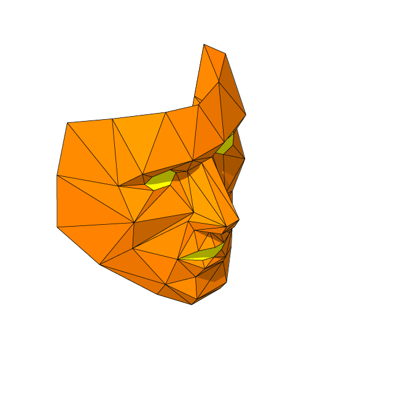
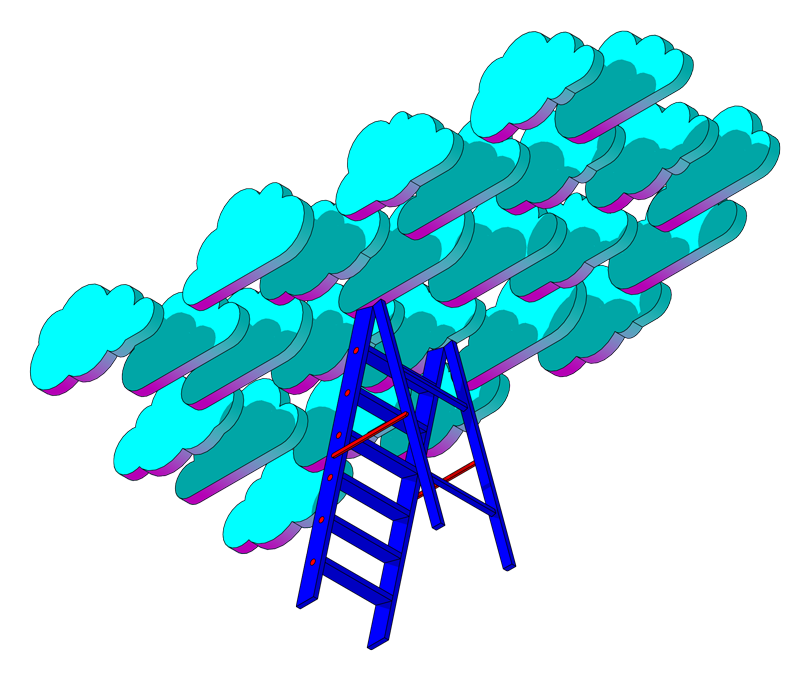

New learning architecture_
New learning architecture_
From chaos to the architec-ture of interac-tion
Technologies that have already influenced the way we communicate, work, travel, and play sports, are already affecting the way we learn. Information networks, personal mobile devices, vast amounts of data and the clouds where they are stored, Open Educational Resources (OER), as well as gaming mechanics and machine learning, are all changing the architecture of the learning process.
Learning content can be delivered via a variety of devices and platforms connected with each other. You can receive a task from a teacher in the learning management system, discuss it over a social network, ask questions by email, prepare for an exam in an application, receive an online certificate and place it in an e-portfolio together with other merits from circles, sections or refresher courses.
We are working together to identify the currently obvious system components of the future digital learning ecosystem, which will eventually replace industrial age education.
Learning Management System (LMS)
Today, this is a repository of learning content, data, and tools for working with them. This bloated and monolithic functionality is the weak point of such systems. Learning Management Systems need to learn how to support different forms of digital learning content, work with desktop, online and mobile applications, and allow connecting and disconnecting modules from various vendors, or, conversely, to diversify themselves.
Learning Content Management System (LCMS)
The sharp increase in variability and availability of teaching tools has led to the development of Learning Content Management Systems, which will allow teachers to get a clear view of the new learning opportunities, embed interactive content and mobile games in lessons or, conversely, to gather courses from separate tools, and create and publish their own learning materials.
For example, you can create content collectively, duplicate it in any format, adapt it to your own needs, and provide comments. If the resource is available not only to the teachers of the university/school but also to the staff of other educational institutions, this will be the basis for improving the quality of learning materials and the learning process as a whole.
Non-interactive content
Books, videos, original historical documents and other good old, non-dynamic learning content have not disappeared, and continue to make up an important aspect of learning programs. Over time, the form of content will take on more and more interactive features, becoming part of various learning environments.
Instrumental environments
In addition to the non-interactive content, a variety of digital instrumental learning environments – from mobile apps to online collaborative platforms – are increasingly included in the learning process. Games, simulations, virtual models and online labs, visual programming and data processing environments, services for creating and working with student portfolios and many other online services that are not yet classified into separate types, are all learning to interact with each other, building a new architecture of the learning process.
Data storage
Interactive learning tools are generating an explosive growth of accumulated data. First, this refers to anonymous data on study events, learning trajectories, efficiency of teaching methods and learning programs in general. Google Analytics analogs for education can serve both for collection, storage and access to data, as well as for analyzing such data and generating recommendations. The collected data can be made available to teachers, researchers and analytical services. These data can be used by learning management systems to develop new models of assessment, issuance of badges, diplomas or certificates.
From control
to choice
Technologies should by chosen by those who use them
The right to choose specific technologies and their combination at any stage of learning should belong to the person who is responsible for it – the university, school, or the student themself. Having a choice stimulates curiosity, and makes students both more independent and motivated.
From autonomy to a technologi-cal ecosystem
Data follow the person
Students should have complete control over their own data, and the ability to take them along when transitioning between different learning systems and subject areas, store and use them at their own discretion at any time, as well as send them for analysis and recommendations to new learning platforms and specialized services.
From autonomy to the ecosystem
Various learning platforms should be able to communicate with each other
Customization of education, the emergence of a growing number of learning services and the freedom of actually choosing them, for all the participants, assumes the need to transfer digital data from one environment to another. A strong alliance of different platforms is possible only when there are common authorization and data exchange standards. Management systems in educational institutions should be able to keep track of a student's progress in third-party applications: partially or fully view completed activities and proven skills.
HTML5 is already helping people to work with a major variety of gadgets and browsers; LTI will allow various educational components to integrate with each other more tightly; clumsy disks and SCORM should be replaced by public APIs, open standards and specifications – JSON, REST, HTTPS, OAUTH2. Data security should be ensured by using encrypted protocols and partner keys.
This will reduce dependence on monolithic integrated software solutions, open the way for free software and narrow-focused commercial projects, develop competition, and improve the quality of decisions.